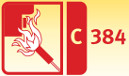
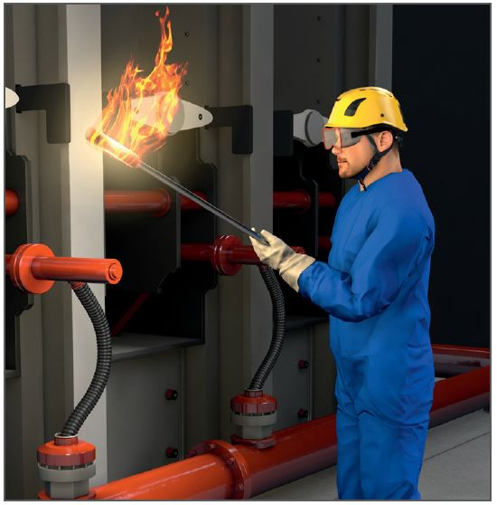

Trocknen, Anheizen und Aufheizen im Feuerfestbau
|

|

Gefährdungen
- Beim Trocknen, Anheizen und
Aufheizen im Feuerfestbau
besteht die Gefahr des Verbrennens oder der Explosion
durch Ausströmen von unverbranntem
Gas oder durch Austropfen
von Brennmaterial.
Allgemeines
Vorbereitende Arbeiten
- Mit dem Trocknen oder Anheizen erst beginnen, wenn
- der Betreiber der Anlage dem
Aufsichtführenden die Freigabe schriftlich bestätigt hat,
- eine schriftliche Betriebsanweisung an der Arbeitsstelle vorliegt,
- der Aufsichtführende ständig anwesend ist,
- eine arbeitsplatzbezogene
Unterweisung über mögliche
Gefahren und entsprechende
Schutzmaßnahmen sowie das
Verhalten im Gefahrfall durchgeführt
wurde,
- der Gefahrbereich abgesperrt
ist und sich dort keine Personen mehr aufhalten.
Schutzmaßnahmen
- Sicherstellen, dass die Heiz- oder
Rauchgase in die Atmosphäre
abgeleitet werden.
- Schutzgitter vorsehen, sofern
heiße Bauteile berührt werden
könnten, z. B. wenn Dämmschichten
erst später fertiggestellt werden können.
Arbeitsausführung
- Unbeabsichtigtes Ausströmen
von unverbranntem Gas oder
unbeabsichtigtes Austropfen
von flüssigen Brennstoffen verhindern,
z. B. durch Verschließen
der Absperrventile vor Inbetriebnahme
der Brenner oder bei
Unterbrechung der Heizvorgänge.
- Entstehen von explosionsfähigen Gasgemischen verhindern,
z. B. nach Gasmangel oder
durch Eintreten von Gas und Luft
in Luft- oder Gasleitungen, durch
sofortiges Absperren der Gaszufuhr.
- Nach Unterbrechungen des
Aufheizprozesses Anlagenteil
erst "gasfrei" machen, bevor ein
neuer Zündvorgang eingeleitet
wird.
Achtung:
- Die Zündflamme ist einzuschalten,
bevor die eigentliche
Brennstoffzufuhr erfolgt.
Zunächst ist mit der kleinsten
Brennstoffmenge und dem
größtmöglichen Luftüberschuss
der sogenannten "kalten
Flamme" zu beginnen. Die
Temperatursteigerung erfolgt
über Thermoelemente der
Brenner, indem die Brennstoffzufuhr
kontinuierlich erhöht
wird.
- Fluchtwege freihalten.
- Am Arbeitsplatz nicht rauchen
und keine offenen Flammen verwenden.
Keine Schweißarbeiten
und Trennschleifarbeiten ausführen.
Weitere Informationen:
DGUV Information 201-055 Feuerfest-, Turm- und Schornsteinbau
DIN EN 746-2
07/2019